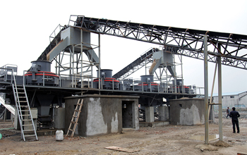

Sand making machine equipment belonging in our infancy stage, slightly slow development. sand making machine industrial development is very fast, but it faces many development bottlenecks. And the development of sand production line industry in recent years, but it is for all to see, the development of fast. Sand making machine has international patent protection reliable quality advanced in recent years, the domestic sand making equipment industry experienced a roller coaster ups and downs, but with the support of relevant national policies has intensified, will lead the sand making equipment, Sand making machine, sand making production line industry, a new round of development of high tide.
Sand making equipment in our iron ore beneficiation process department use, crushing, grinding technology and quality of the extracted ore have reached the international advanced level. Different quality requirements for aggregate also vary considerably according to the construction of the railway grade, quality as sand and gravel is to accelerate progress and to ensure that the inevitable choice of the Beijing-Shanghai high-speed rail projects, where stone crusher, crusher, sand making machine, such as choose stone sand making production line equipment is essential, in fact, raised sand making machine advantage lies in the process of working through a qualitative improvement in the amount of material.
Sand making machine by strengthening R & D and innovation to improve the competitiveness of the brand, the face of the economic crisis, sand making machine equipment must be selected to help themselves, we must pay attention to their own development, promote industrial restructuring sand making machine equipment, by strengthening R & D and innovation, accelerate system sand product upgrading and restructuring. The rapid development of the most effective means is to accelerate the company's technology innovation, industrial upgrading, technical upgrade and improve the market competitiveness of sand making machine products.
Sand making machine equipment technology gradually stabilized, the industry chain gradually stabilized, gradually led to the development of other industries, the construction industry needs to make up for the gravel, and constantly applied to municipal industries, high-speed rail, mining, and gradually realized only commitment, and more importantly practical doing, sand making machine in the development of high quality.
Domestic sand making production line fast market development prospects, the future trend of energy saving and environmental protection is sand making machine development, but as the use of clean energy sources like, but on the whole, with the world, especially in emerging market countries on energy saving improve the degree of concern, sand making machine shift to a more environmentally friendly and more energy consumption, more low-emission trend is irreversible.
Live chat with our professional customer service! Get the quotation list.
Chat Now